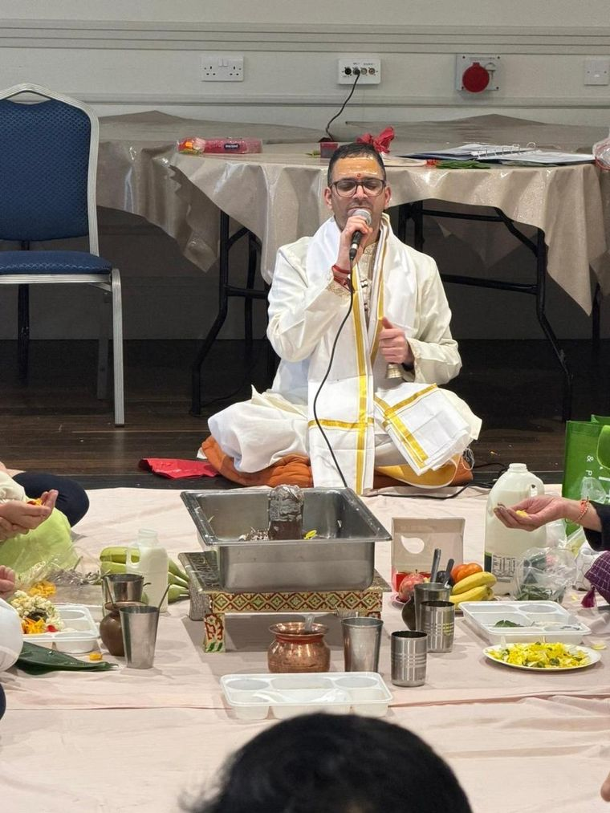
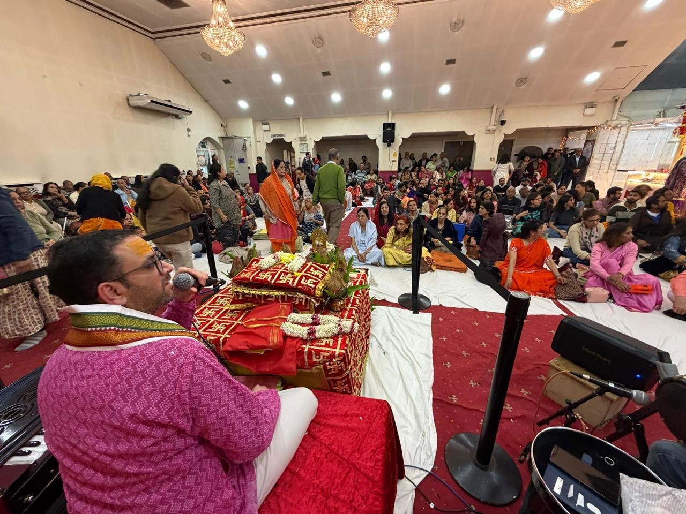
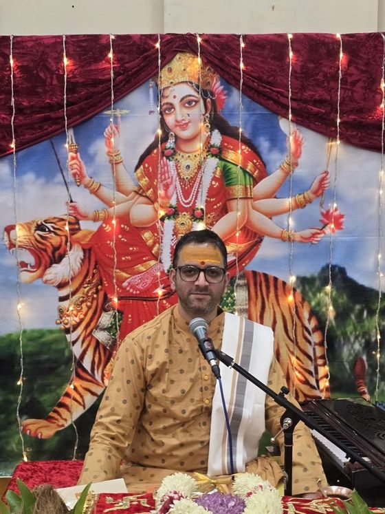
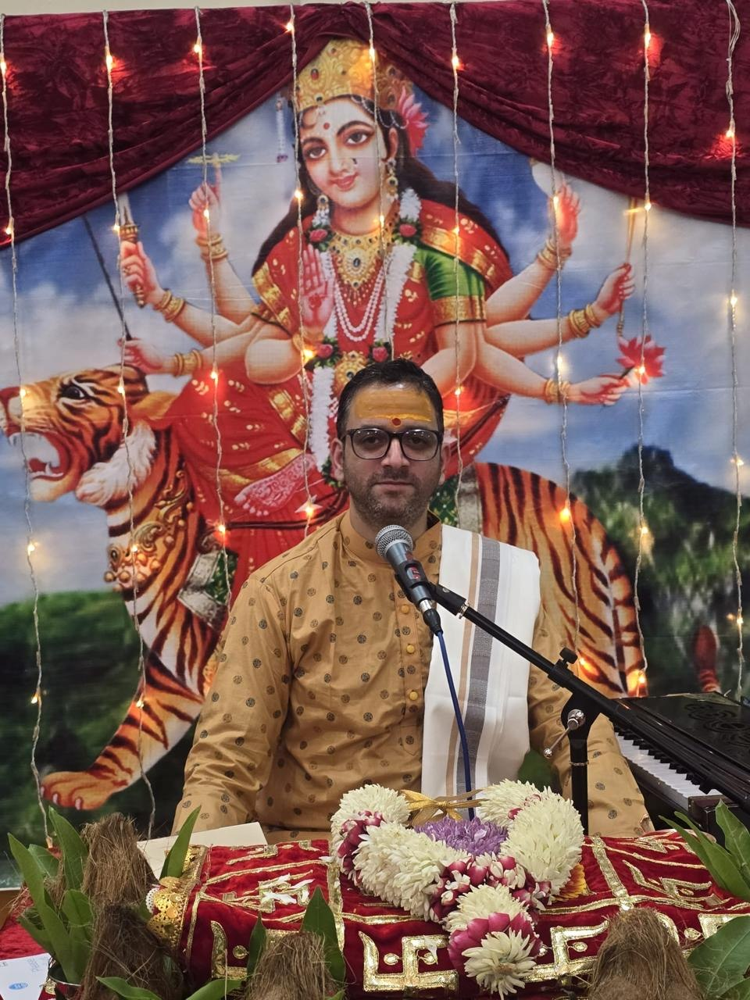
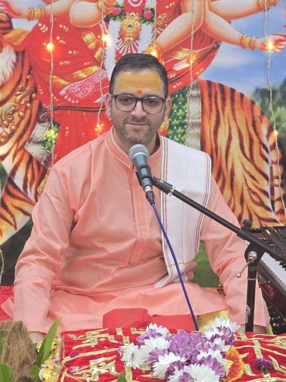
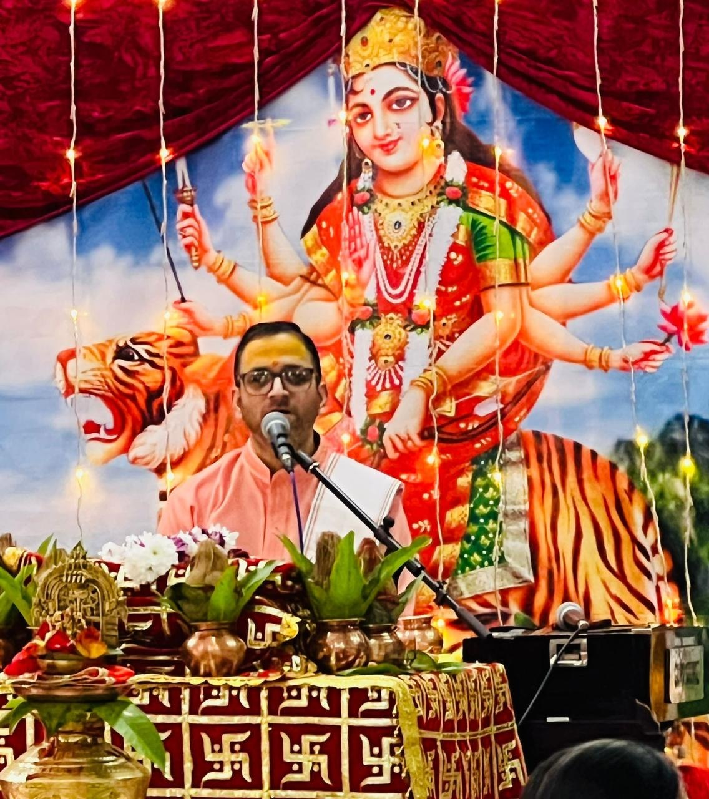
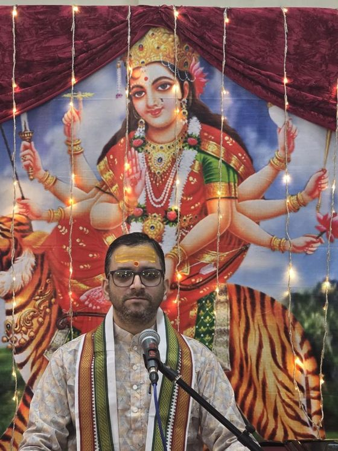
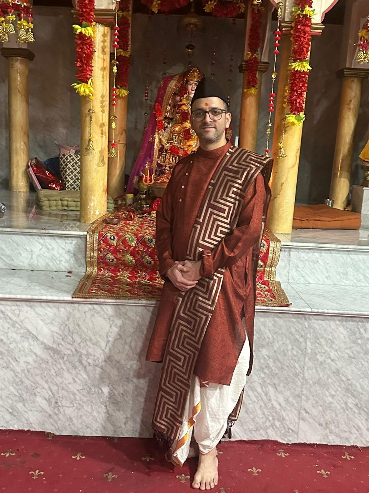
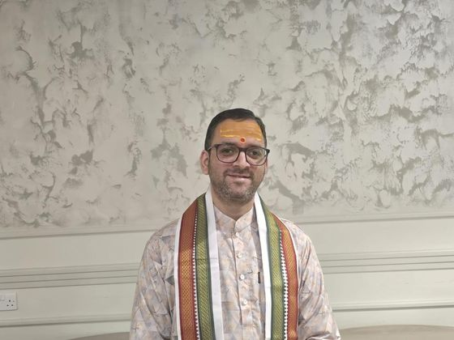

How to Choose the Right Hindu Wedding Pandit in the UAE
What to look for when booking a priest for your ceremony in Dubai or Abu Dhabi.
Read More →ॐ Namaste & Welcome
A qualified Hindu pandit and purohit serving Dubai, Abu Dhabi and Sharjah — performing all types of puja, havan, griha pravesh, Satyanarayan Katha, Sunderkand and full Vedic wedding ceremonies. Every mantra is recited in Sanskrit and explained in plain Hindi and English, so every generation in the room understands what is being blessed.

About Acharya Ji
Acharya Deepak Thapliyal — Sahityacharya, Jyotishacharya, Sangeet Prabhakar, B.Ed. — has spent over fifteen years conducting pujas, weddings and life-cycle ceremonies for Hindu families, and now serves the Indian community across the United Arab Emirates. He is based in Abu Dhabi and travels regularly to Dubai and Sharjah for ceremonies at homes, villas, community halls and temples.
He is the founder of Maa Jwalpa Astrology Research Centre (माँ ज्वालपा ज्योतिष अनुसंधान केंद्र). Trained in Vedic scripture from an early age, he carries fluency not only in the mantras themselves but in what they mean — translating each ritual into language the younger generation can carry forward. Every ceremony, whether an intimate griha pravesh in a Dubai apartment or a three-day wedding celebration, is conducted with the same unhurried care: the right samagri, the correct order of rites, and time set aside afterwards for questions.
Sacred Offerings
From the first breath to the final rites — every ceremony below is performed at your home, villa or venue in Dubai, Abu Dhabi and Sharjah.
Any Vedic prayer or ritual your family observes, performed with the correct vidhi and complete samagri.
The first invocation before every auspicious beginning — new homes, new ventures, new chapters.
Durga Saptashati paath and the nine nights of Navratri observed in full, with daily aarti.
Sacred fire ceremony for purification, clarity and protection — arranged safely for indoor UAE homes.
Housewarming rites to bless a new apartment or villa with peace and prosperity before you move in.
Sunderkand paath sung with harmonium and tabla — a Sangeet Prabhakar's speciality.
Continuous unbroken recitation of the Ramcharitmanas, organised end to end for your family.
An evening of devotional singing, led live, for festivals, anniversaries and community gatherings.
A night of jagran and devotion to the Mother Goddess, complete with chowki sthapana and aarti.
The devotional retelling and puja of Lord Vishnu's blessings, performed for gratitude and good fortune.
Full Vedic vivah rituals, from mandap muhurat to saptapadi, conducted with warmth for both families.
Birthday puja with ayushya havan and blessings for long life, health and success.
Kundali matching for marriage — guna milan, mangal dosha assessment and clear, practical guidance.
Detailed horoscope analysis with dasha readings, timings and remedies — in person in the UAE or online.
Ceremony to the nine celestial bodies, performed to ease planetary influences and restore balance.
Compassionate guidance through funeral rites, the 13-day ceremony, and asthi visarjan.
Naming ceremonies, mundan and blessings to welcome a new life into the family.
Any Hindu ritual your family observes can be arranged. Call or WhatsApp +91 94107 70925.
Where Acharya Ji Serves
Three cities served week in, week out — with travel to the other emirates on request.
Home pujas, griha pravesh and Hindu weddings across Bur Dubai, Karama, Deira, Al Barsha, JLT, Dubai Marina, Silicon Oasis and the wider emirate — including ceremonies at community halls, temples and hotel venues.
Pandit in Dubai →Acharya Ji is based at Al Reem Tower, Electra Street (TCA), Abu Dhabi — available at short notice across TCA, Hamdan Street, Khalidiya, Al Reem Island, Mussafah and Khalifa City. Consultations for kundali matching and horoscope analysis are also held here.
Pandit in Abu Dhabi →Serving Al Nahda, Al Majaz, Al Qasimia, Muweilah and Rolla — Mata Ki Chowki, Bhajan Sandhya, Akhand Ramayan and family pujas arranged for apartments and villas, with full samagri brought along.
Pandit in Sharjah →Also available in Ajman, Al Ain, Ras Al Khaimah and Fujairah by prior arrangement, and for ceremonies in India and the United Kingdom.

Rituals Performed
A wedding priest's role goes far beyond reciting mantras — it is about making sure both families, young and old, understand the meaning behind each vow exchanged over the sacred fire. Acharya Deepak Thapliyal conducts ceremonies across regional traditions, narrating the Sanskrit in clear Hindi and English as the rituals unfold.
Enquire About a WeddingAstrology & Guidance
As a qualified Jyotishacharya, Acharya Ji reads janam patrika for career, marriage, health and property decisions — explaining what the chart shows, what it does not, and which remedies are worth doing. Patrika Milan for marriage is offered in person in Abu Dhabi and Dubai, or online for families spread across countries.
Book a ConsultationKind Words
“Acharya Ji explained every single step of our griha pravesh puja before he did it. Our children were actually interested in what was happening — that says everything.”
“From our first WhatsApp message, we felt looked after. He took the time to understand both our families before the wedding day even arrived. It made the ceremony feel truly ours.”
“Patient, warm, and never once rushed through the mantras. He made space for questions from the older generation and the younger one at the same time.”
“The musical Sunderkand he led at our home was unforgettable. Everyone joined in — it did not feel like a formality for a single moment.”
“He performed our Satyanarayan Katha with so much devotion and care. It was exactly the experience we hoped to give our parents.”
Moments Captured
Moments from recent pujas, havans and temple ceremonies.







Watch & Follow
Pandit Deepak Thapliyal Official · पंडित दीपक थपलियाल ऑफिसियल
Acharya Ji is a katha vachak and devotional singer as well as a priest — a Sangeet Prabhakar by training. His verified YouTube channel has carried Hindi bhajans, live programs, katha recitals and stuti since 2012: Na Mantram No Yantram, Durga Durga Var De Hamko, Shri Mahalakshmi Ashtakam and over a thousand more, free for every family to listen to before they ever pick up the phone.
youtube.com/@deepakthapliyal
Common Questions
Call or WhatsApp Acharya Deepak Thapliyal on +91 94107 70925, or reach him on the UAE number +971 50 827 3876. Share your ceremony type, preferred date and emirate, and he will confirm the muhurat, the samagri required and the duration.
Dubai, Abu Dhabi and Sharjah are the primary cities, served every week. Ajman, Al Ain, Ras Al Khaimah and Fujairah are covered by prior arrangement. He is based at Electra Street, TCA, Abu Dhabi.
Yes. A complete samagri list is shared in advance, and arrangements can be made to bring everything needed for the ritual to your home, villa or venue anywhere in the UAE.
Mantras are recited in Sanskrit, with the meaning of each step explained in Hindi and English so every generation present understands the ritual as it happens.
Yes. Griha pravesh, Satyanarayan Katha, Ganesh puja and havan are regularly performed in apartments, villas and community halls across Dubai, Abu Dhabi and Sharjah, with smoke-conscious arrangements for indoor havan where needed.
Yes. As a qualified Jyotishacharya, Acharya Ji performs Patrika Milan (kundali matching) for marriage and Janam Patrika Vishleshan (horoscope analysis) with remedies — in person in the UAE or online.
Guides & Insights
What to look for when booking a priest for your ceremony in Dubai or Abu Dhabi.
Read More →Samagri, muhurat and practical arrangements for a housewarming puja in the UAE.
Read More →Why this nine-planet ceremony is performed, and what it aims to restore.
Read More →Key dates for pujas, vrats and celebrations across the year in the Emirates.
Read More →Understanding the antim sanskar process and how a priest can help.
Read More →Guna milan, mangal dosha and how to read the result sensibly.
Read More →Get in Touch
Share a few details about your ceremony and Acharya Deepak Thapliyal will respond personally to discuss dates, muhurat, requirements and the rituals involved.